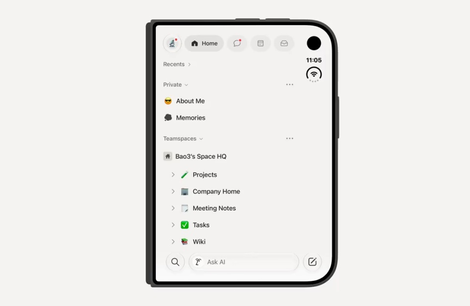
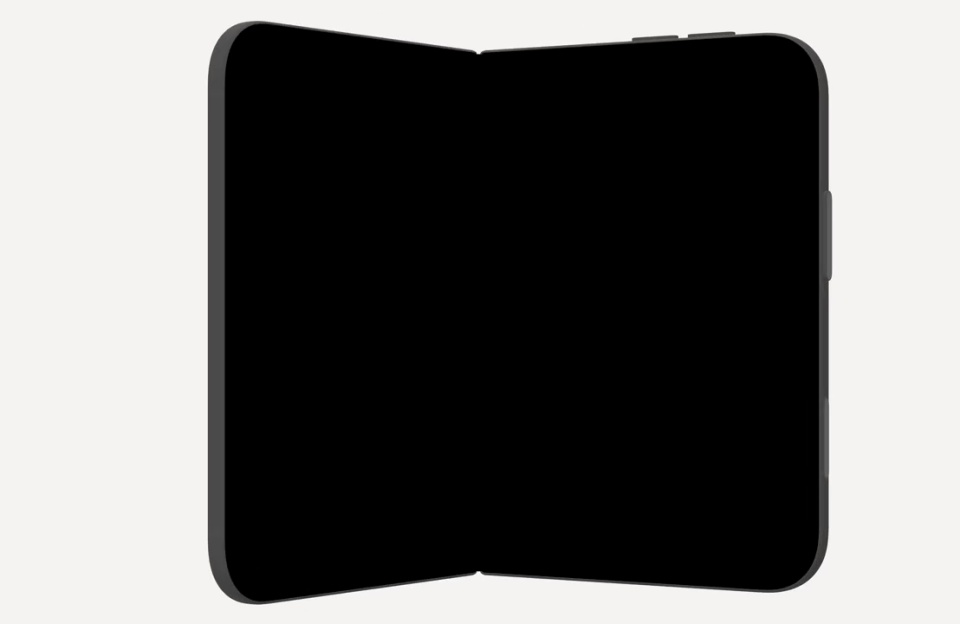
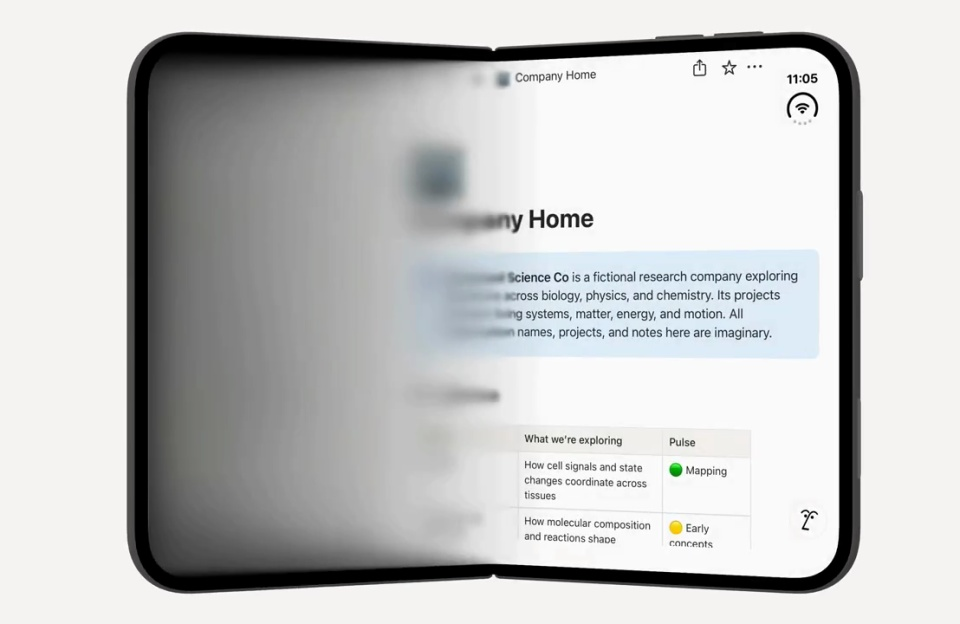
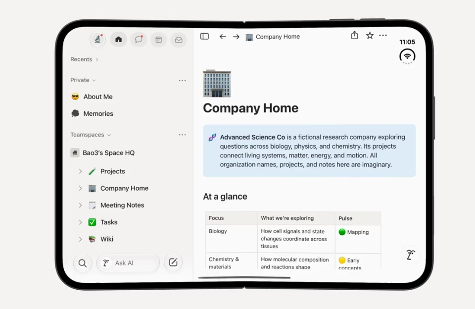
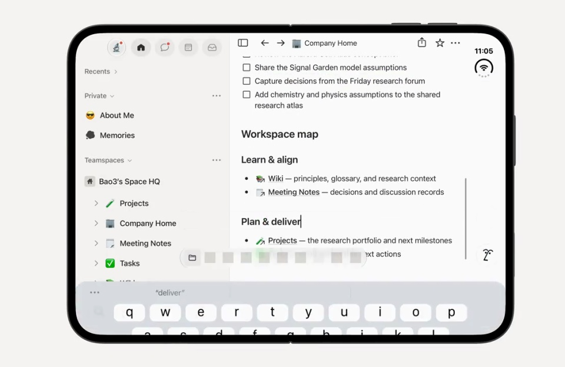

Notion / V090
适配 iPhone Duo
用折叠设备从窄屏变宽屏，演示工作区如何重新分配空间。内容重新排版，侧栏与正文各自保留行为。
构图与编排 可播放 · 可替换内容
整体编排规则示例
查看 HTML 源码
<!doctype html><html lang="zh-CN"><meta charset="utf-8"><meta name="viewport" content="width=device-width,initial-scale=1"><title>适配 iPhone Duo · sequence</title><style>html,body{margin:0;width:100%;height:100%;overflow:hidden;background:#ffffff}canvas{display:block;width:100%;height:100%;object-fit:contain}</style><body data-mode="sequence"><canvas width="1000" height="600"></canvas><script src="data.js"></script><script src="common.js"></script><script src="scene.js"></script><script src="bridge.js"></script></body></html>画面元素折叠设备侧栏正文光标软键盘
MOTION LANGUAGE
动作与构图
局部动作 · 构图规则
01
展开时增加空间，而不是拉伸文字
展开时增加空间，而不是拉伸文字规则示例
查看 HTML 源码
<!doctype html><html lang="zh-CN"><meta charset="utf-8"><meta name="viewport" content="width=device-width,initial-scale=1"><title>适配 iPhone Duo · sequence</title><style>html,body{margin:0;width:100%;height:100%;overflow:hidden;background:#ffffff}canvas{display:block;width:100%;height:100%;object-fit:contain}</style><body data-mode="clip" data-start="0" data-end="3"><canvas width="1000" height="600"></canvas><script src="data.js"></script><script src="common.js"></script><script src="scene.js"></script><script src="bridge.js"></script></body></html>设备边界逐渐变宽，正文获得更大的可视区域。侧栏作为固定导航出现，正文按宽度重新排版；文字字号和图标比例保持稳定。
02
滚动与键盘只影响相关区域
正文滚动时侧栏不跟着移动。聚焦文本后再出现键盘，下方内容随可用高度调整，输入光标留在可见范围；设备外框继续作为稳定参照。
03
把层级做在裁切和排版里
浅色界面、深色无衬线正文与细分隔线即可建立工作区。侧栏文字密度低于正文，设备边界和内容裁切范围分别控制；柔和蓝、杏和紫色只承担次级强调。
04
换工作区内容，保留响应方式
可以更换公司主页、笔记或项目文档。使用有长短段落差异的内容，让展开后的重新排版清楚可见；键盘出现的时机要对应真实的输入焦点。
SEQUENCE
段落与节奏
点击段落，定位到上方编排示意。





画面参考 · 离散静帧
KEEP THE RELATIONSHIPS
制作其他主题
- 可换工作区内容；保留窄屏→宽屏布局重排，不把内容横向拉伸。
制作约束
折叠设备 / 侧栏 / 正文 / 光标 / 软键盘
- 展开后增加正文可视面积，侧栏与正文有父子裁切关系。
- 滚动仅影响正文；末尾键盘遮挡下部并压缩阅读区域。